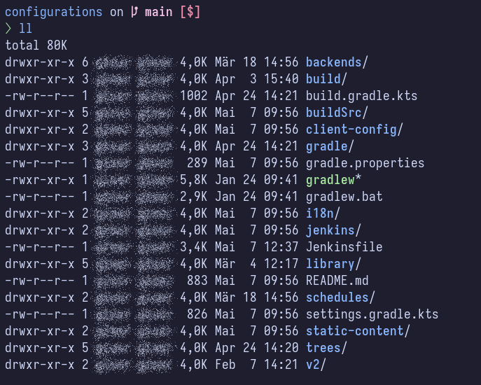

Configuration Directory & Tasks¶
Configurations¶
| Directory | Environment | Explanation |
|---|---|---|
backends |
Suite |
Definition of available backends, their endpoints and their nodes for fetching data |
client-config/config.json |
Required |
Client configuration file |
i18n |
Required |
Directory containing customer localizations |
library |
Suite |
Libraries for business logic of various backends/adapters |
schedules |
Suite |
Schedule definitions for scripts executions |
static-content |
Required |
Static-Content to customize and extend the client |
trees |
Required |
Base of use-case configurations, template support available |
trees/templates |
Required |
|
trees/mapping |
Suite |
Definition of mappings between the ui and the configured node of a backend |
trees/ui |
Suite |
Definition of ui representation of a use-case |
trees/maximo |
Maximo |
Use-Cases for Maximo v2 backend, will be uploaded to treeConfigurations folder |
Suite: Insight V3 Adapter (Datasource, HxGN, SAP, REST)
Insight CLI¶
Config files are uploaded using the Insight CLI tool insight.
Download¶
- Windows and Linux binaries are available as download
Container¶
- Access required to
rodias.azurecr.io/insight-cli:<version>image- available by using the provided credentials for other Insight related images
Commands¶
| Command | Description |
|---|---|
insight upload languages |
Generate and upload language translations. |
insight upload client-config |
Generate and upload client configuration and static content. |
insight upload suite-configurations |
Upload prepared Insight suite use cases. |
insight upload maximo-configurations |
Upload prepared Insight Maximo use cases. |
insight upload all |
Generate and upload language translations, client-configuration, static content and use cases. |
insight doctor |
Check required project files and folders. |
Parameters¶
The following parameters can be provided either as command-line flags, environment variables or YAML file:
--project-dir(Default:.)- Base directory for all commands (e.g. for relative paths)
- Env:
INSIGHT_PROJECT_DIR
--url(Default:http://localhost:8080)- URL to Insight middleware
- Env:
INSIGHT_URL - YAML:
url: http://localhost:9090
--store-token(Default: empty)- Token to authorize upload
- Env:
INSIGHT_STORE_TOKEN - YAML:
store-token:
--dry-run(Default:false)- Generate only (no upload)
- Env:
INSIGHT_DRY_RUN - YAML:
dry-run: true
--use-cases(Default: empty)- Upload a list of specific use cases
- Only in task: upload maximo-configurations
- Env:
INSIGHT_USE_CASES - YAML:
use-cases: foo.json,bar.json
insight.yaml¶
The insight.yaml file must be located in the same directory as the insight cli. If sensitive data, such as the store-token, is contained in the file, it should not be checked into a repository. The developer should create this file when it is needed.
Example insight.yaml:
# Insight CLI config
# URL to the insight middleware server
url: http://localhost:9090
# Authorization token for store uploads
store-token: 7d48d5fc-5165-4957-bdd4-8e5d819725b4
Configuration priority¶
The values are overwritten in the following order (highest priority first):
- Command line flags (e.g.,
--url http://example.com) - Environment variables (e.g.,
INSIGHT_URL=http://example.com) - Configuration file (
insight.yaml)
Examples¶
insight upload client-config --store-token someToken
insight upload suite-configurations
insight upload maximo-configurations --use-cases=my-workorders.json
VSCode Integration¶
In Visual Studio Code, tasks can be used to support the work workflow. These tasks can also be executed via shortcut so that configurations can be made as quickly and conveniently as possible. The tasks.json file must be stored in the workspace as follows:
- .vscode
- tasks.json
- insight(.exe)
- insight.yaml -> optional
The tasks can now be selected and executed using the ctrl + shift + p -> Tasks: Run Task function.
In addition, the default build task is to upload the currently open file ctrl + shift + p -> Tasks: Run Build Task. This allows changes to be uploaded to the system very quickly and enables parallel work on different files.
Example tasks.json
Library - Suite: Insight V3 Adapter (Datasource, HxGN, SAP, REST)¶
Requirements¶
Windows¶
- Eclipse Temurin OpenJDK v17
- Setup with PATH and JAVA_HOME environment set correctly
Container¶
- Access required to
rodias.azurecr.io/insight-gradle-util:<version>image- available by using the provided credentials for other Insight related images
Directories¶
Build & Tools¶
| Directory | Explanation |
|---|---|
build |
Artefacts of build steps |
buildSrc, gradle, .gradle-user, .gradle-repo |
Gradle environment incl. libraries for external build |
Jenkinsfile, jenkins |
Example for CI/CD integration, optional depending on environment |
Gradle & gradle.properties¶
Gradles main configuration and cache management is controlled through the GRADLE_USER_HOME environment variable.
The default value for this is the .gradle folder in the users home directory, independend of the folder/project Gradle is
executed. To get a project dependent setup GRADLE_USER_HOME must be defined.
If a relative path is configured, this path is relative to Gradles main project folder.
Examples for gradle.properties in GRADLE_USER_HOME:
file-based properties (Windows)¶
insightRepo := ".gradle-repository"
external dependcies¶
By default external dependencies are fetched from:
- Maven Central, https://repo1.maven.org/maven2
- Gradle Plugin Portal, https://plugins.gradle.org/m2
It's possible to configure proxy servers like Nexus or Artifactory.
Tasks¶
Gradle-Wrapper¶
Gradle tasks supposed to be run by calling gradlew
The following environment variables must be set.
INSIGHT_URLINSIGHT_STORE_TOKEN- This environment variable must also be set for the
insight-middleware
- This environment variable must also be set for the
- If the project-specific adapter runs in a separate container,
INSIGHT_STORE_URLmust be set, see setup.
Gradle-Tasks¶
| Task | Description |
|---|---|
tasks |
List all available Gradle tasks. |
uploadLibrary |
Build and upload for business logic libraries. |
notifyLibraryRefresh |
Notify adapters for business logic libraries. |
Insight-Store upload¶
The upload tasks put files into insight-store.
Library upload¶
Insight provides the possibilty to implement specific backend routines. The compilation and handling must be done with gradle as well and
must happen in the library subfolder. As these library implementations are very specific to a specific project they must be properly configured
and can't be prepared for all circumstances.
An example for this is the uploadLibrary task, which is supposed to compile and upload all library code to the corresponding adapters. As the
amount and type of adapter vary per customer project this task has to be modified in the build.gradle.kts, so it contains all required dependcies
to all sub-tasks in the library folder.
The library projects responsible for uploading must have the same name as their corresponding service running the adapter. As best practice we use
the suffix -suite for those names, like business-suite, hxgn-suite, bim-suite, ...
Alternatively, the following environment variable can be set:
INSIGHT_SUITE_NAME
Library Dependencies¶
Please make sure the corresponding versions in gradle/lib.versions.toml match your Insight version.
Check the release-notes for required version adjustments of plugins provided.
Migration Hints:¶
Folders:¶
templates/ui=>trees/templatesraw/ui=>trees/ui
Example, structure of template project¶
